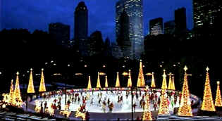
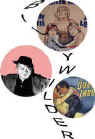

| Serendipity (SE)/ B, B+ |
| Miramax/2001/91/ANA 1.85 |
Serendipity starts out oozing New York charm.
How can you miss with big white snowflakes floating against a Manhattan
night sky; candy-colored straws and attractive deserts at a landmark
Manhattan sweet shop? There's a charming John Cusack and an adorable Kate
Beckinsale making romantic sparks fly. Unfortunately, most of the film is
spent in their separate stories.
Jonathan meets Sarah at a Bloomingdale department
store counter at the height of the holiday season. Brought together by
chance, they spend a delightful evening together. Both are already
romantically involved. But, just as a chance meeting brought them
together, Sarah believes it's fate that should determine their future.
That translates into two separate stories evolving about Jonathan and
Sarah trying to get back together. Too bad. The initial chemistry was
wonderful and it's disappointing that these characters wind up spending so
little screen time together.
 |
|
A perfect New York romantic
scene. ©Miramax
|
Director Peter Chelsom paces the film effectively,
moving from coast to coast and story to story. Chelsom uses some nice
technical flourishes for his transitions instead of the traditionally
pasted together montages. They work very well.
The film plays very much like the title:
the word serendipity kind of floats in the air on a bunch of high notes
lightly blowing in the breeze. It's a nice film. It's not deep, it's
not hilarious, some of it's a little obvious, but it's charming, always
charming.
Cusack and Beckinsale, as mentioned earlier, are both
very good at light comedy. The assortment of supporting characters provide
some good moments to fill in the long, blanks between core romance. The
scene in Bloomingdale's when Jonathan is trying to find the account number
is very funny. Eugene Levy is a great Bloomie's salesman.
Serendipity is one of those film's that truly
depends on the timing of the wind and how it blows, how it blows in the
market place, how it blows through the home theater; it's a mood dependent
film with a frail quality. In the end, it works very nicely.
Serendipity tries to paint a wonderland
picture of New York City from the very beginning. The color is truly
delightful from from the candy-colored rendition of deserts at sweet shop Serendipity
to the beautiful patterned over jacket Sarah wears. Background detail
looks very good. Natural looking skin tones and beautiful flowers. Overall
light output is excellent. Blacks are terrific, showing off the skylines
to a tee. Overall, Serendipity has been turned into a very
cinematic looking DVD. It's smooth looking with good detail.
Serendipity is packaged as a special edition
featuring audio commentary by director Peter Chelsom. Deleted scenes also
get Chelsom's observations. The a behind the scenes documentary and
Chelsom's production diary. A stills gallery, storyboard comparisons and a
theatrical trailer complete the package.
Reviewed on a Sharp XVC-9000U DLP Projector |
|
|
|

Selections from the Feature
Archive include articles on Akira Kurosawa, Blonde Bimbos, Frank Darabont, Steven Culp, John Herzfeld or Vietnam: The Hollywood Pariah, and many
more....
Nobody's
Perfect

Billy Wilder left movie lovers a legacy of cinematic treasure. From
defining Film Noir to outrageous comedy, writer/director Wilder delivered
the goods with consummate style.
 
ISF Monitor
Calibrations in the Tristate New York area. Lots of hardware
info and frequent hardware peaks from video expert Kevin Miller. They may
be judgmental, but that's the point, isn't it. Lots of DVD reviews plus
news and more.
 Have you visited
Home Theater
Talk lately? One of the friendliest places on the Net for Home
Theater and DVD discussion, you can get help for installation problems or
simply share your opinions with other Vidiots. Have you visited
Home Theater
Talk lately? One of the friendliest places on the Net for Home
Theater and DVD discussion, you can get help for installation problems or
simply share your opinions with other Vidiots.

Manufacturer of computer-video interfaces, switchers, distribution
amplifiers, computer-video scan converters, and high resolution cable.
Found in many high end home theater systems.
 Sight and Sound
Magazine is the venerable voice of The British Film Institute. The site
includes articles and film reviews. A great resource in print and on the
Internet. Sight and Sound
Magazine is the venerable voice of The British Film Institute. The site
includes articles and film reviews. A great resource in print and on the
Internet.

Lady Eve, The (SE) A,C+

Wonderful classic comedy from writer/director Preston Sturges. Henry Fonda
and Barbara Stanwyck star.
|